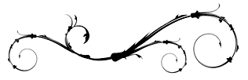

Eran más de las doce de la noche en la ciudad. Las calles no están completamente vacías, pero en el centro, entre los altos rascacielos futuristas y las viejas sedes de los bancos, no hay rastro de las personas que trabajan de día. Todos han vuelto a sus casas, excepto un individuo que se disponía a hacerlo en aquél momento. Su nombre es Pedro, y es un mago.
Pedro, como muchos otros días, ha pasado demasiado tiempo en el trabajo, y no por voluntad ajena. Pero, a diferencia de otros días, hoy no se culpa de la tardanza. El motivo por el que Pedro ha hecho horas extras, y ha tenido que dar explicaciones al director, y se ha jugado una prate importante de su carrera sin una buena razón, tiene nombre y apellidos: Mateo Herón-Santos, el estúpido señor Herón-Santos.
Pedro era una persona tranquila, pero aquella noche no podía evitar andar más rapido de lo normal. y apretar con fuerza su maletín, aunque no se diera cuenta. Todo en lo que podía pensar era en el señor Herón-Santos, el estúpido y retorcido señor Herón-Santos. Se dió cuenta de que le odiaba como nunca había odiado a nadie antes. Santos es todo lo que más detesta; es impráctico, incansable, imbécil y testarudo. Si tan solo no hubiera tenido la mala suerte de haberse cruzado con él...
Pero no había nada que hacer. Santos estaba a su cargo, y eso quería decir que cada vez que la cagaba, le tocaba a Pedro limpiar el marrón.
En apariencia Santos y Pedro no eran tan distintos. Ambos eran hombres blancos, con voz profunda y mirada oscura, el porte erguido y alto y más contenido del estrictamente necesario. Sin embargo, por dentro eran personas totalmente distintas. Santos era un maestro en el arte de relegar responsabilidades; nadie le había visto jamás reconocer que la culpa era suya, y lo peor era que lo hacía sin ningún reparo. Pedro, en cambio, nunca tenía la conciencia tranquila. Después de todo, ¿cómo podría?
Apenas tuvo tiempo de reaccionar cuando notó un tirón en el brazo, y al girarse vió a un tipo marcharse corriendo con su maletín bajo el suyo. Trató de seguirle, pero el ladrón era más rápido, y le perdió en seguida.
Mientras recuperaba el aliento, Pedro se maldijo en voz alta. Típico de él, distraerse en sus pensamientos, y olvidarse de que estaba caminando de noche en la ciudad. Le estaba bien empleado. No, no se lo merecía, él nunca había hecho daño a nadie. Pedro comenzó a llorar de rabia, la sintió crecer y crecer en su interior, como un globo hinchándose en su cráneo, que inundaba sus sentidos, y finalmente, cuando había colmado su cerebro por completo, se produjo la explosión.
Pedro no se dió cuenta inmediatamente de lo que había pasado, pero al encontrarse tendido en el suelo y notar el olor a chamusquina, sus peores temores se confirmaron. Alzó la vista y lo encontró: había sido en uno de los edificios nuevos, en la tercera planta, justo encima de él.
Las llamas ya empezaban a adivinarse entre el humo, y la policía llegaría en seguida. Tenía que largarse de allí. Consideró por un minuto llamarles el mismo; si no lo hacía y alguien le había visto, sería bastante sospechoso. Pero era demasiado arriesgado. Le interrogarían de todas formas, y si eso sucedía lo descubrirían tarde o temprano. Y entonces estaría perdido. Pedro optó por echar a correr, lo más rápido posible, tan lejos como pudiera.

Pedro había descubierto su pequeña habilidad mucho antes que la mayoría, cuando los magos sólo eran charlatanes que engañaban a la gente para entretenerla. Parecía un tanto estúpido que se divirtieran de ese modo, pero aquellos eran otros tiempos. Pedro había crecido en una familia religiosa, y todos los domingos sus padres acudían a la iglesia. Aunque Pedro no heredó su devoción, de niño ir a misa era una costumbre tan arraigada en él que nunca se le había ocurrido dejar de hacerlo. Despertarse temprano, vestirse con lo que sus padres llamaban ropa elegante, y saludar, uno por uno, a todos los miembros de la familia, era un ritual que siempre había hecho y seguiría haciendo, tan inevitable como la salida del sol.
Por entonces, los domingos por la tarde echaban por televisión “El gato con botas”, y Pedro nunca se lo perdía. Aquél gato hacía reír, y a veces asustaba, pero siempre le dejaba deseoso de ver el siguiente programa. Un día, la emisión cambió de horario, y, hasta el último momento, Pedro no cayó en la cuenta de que si iba a la iglesia no podría verlo. Aquél domingo, a pesar de suplicar y suplicar como sólo un niño sabe hacerlo, no se salió con la suya. Y todas las pequeñas cosas en las que nunca había reparado le inspiraron un profundo odio. No soportaba tener que ponerse ese estúpido trajecito a cuadros, ni quería quedarse sentado una hora sin hacer nada. Y le fastidiaba tener que besar a los parientes que apenas conocía.
Lo único que pensaba mientras se preparaba para irse era que ójala algo les impidiera llegar, ójala las carreteras estuvieran cortadas, o la iglesia se hubiera derrumbado. Pero sabía que eso no iba a pasar, y sintió rabia, más rabia de la que podía aguantar. La sintió crecer en su cabeza, como una bola de nieve rodando ladera abajo, creciendo hasta que nada pudiera pararla, y entonces, ¡pum!
-¡Vaya, hombre! ¡Pues no se habrá caído el ascensor!
-¡Pero qué dices, Julián! Eso habrá sido el motor, que se ha parado. Llamaré al servicio técnico.
Al principio Pedró experimentó una extraña sensación de placer, en especial cuando sus padres se dieron cuenta de que no llegarían a tiempo a la misa y se resignaron a faltar por un día. Pero después, cuando pasaron las horas sin que llegara ayuda, y el ascensor empezó a oler a quemado, se sintió culpable. Sabía que lo que había pasado, fuese lo que fuese, lo había hecho él, y se prometió que nunca volvería a tener malos deseos.
El incidente se olvidó en seguida, y Pedrito siguió yendo a misa todos los domingos. De hecho, años después se sorprendió de que nadie se lo recriminara.
Pero él jamás lo olvidaría, incluso cuando se convenció de que sólo había sido una coincidencia. Siempre recordaría la imagen del ascensor cuando lograron sacarles, carbonizado y derretido por fuera y lleno de humo por dentro. Los técnicos no lograron averiguar por qué el motor había estallado en llamas de repente, pero no era su trabajo hacerlo.
-Encargaremos uno nuevo.-dijeron.-Éste está embrujado.
Cuando estuvo suficientemente lejos del incendio, Pedro se dió cuenta de que su cartera y las llaves de su casa las llevaba en el maletín. No podía llamar a un cerrajero, porque la seguridad de su edificio era electrónica, así que tendría que esperar al día siguiente para conseguir una llave nueva.
Como no tenía familia en la ciudad, sólo se le ocurrió un lugar al que ir. Andrea y él no estaban juntos desde hacía mucho tiempo, pero recordaba que solía dejar una copia de la llave fuera, escondida en un de los tiestos de la entrada. El sitio no estaba lejos. Al llegar, Pedro encontró la llave en su sitio habitual, y, después de dudar un momento, entró en el bloque.
Como esperaba, Andrea no estaba en casa. Probablemente estuviera trabajando; cuando la conocía, solía hacer largos turnos de noche. Pero había dejado la televisión encendida, y Pedro, anticipando lo que iba a suceder, se sentó a verla. No tuvo que esperar demasiado.
-Interrumpimos este programa para darles noticias de última hora sobre el incendio que se ha detectado hace apenas media hora, en la calle Rosario número 15. El fuego no está controlado aún, así que si se encuentra en esa zona o conoce a alguien que lo esté, se recomienda que abandonen sus casas de inmediato.
Las llamas eran mucho más altas que cuando Pedro las había visto en persona. Seguramente el edificio era de esos nuevos, de madera, y no podrían hacer nada para apagarlo. ¿Cuanta gente podría haber dentro? Era casi la una: la mayoría debía de seguir durmiendo.
-Nos confirman que, según la policía, el origen del fuego aún se desconoce. En principio se trataría de un accidente, pero no se descarta que se haya producido por causas humanas.
Entonces llegó Andrea. No pareció muy sorprendida de verle allí; hizo alguna pregunta, pero no porque le interesara la respuesta.
-Es igual, yo tengo que volver al trabajo. Estamos muy ocupados esta noche, con esto del incendio. Te has enterado de lo del incendio, ¿no?
Pedro se limitó a asentir y señaló a la televisión. En ese momento acababan de cambiar la secuencia grabada por imágenes en directo desde un helicóptero.
-Nada, eso no lo apagan hasta mañana por lo menos. No sé ni para qué lo intentan; si quedaba alguien dentro ya estará muerto.
Parecía que así fuera: el fuego había llegado a todos los pisos y no tenía intención de menguar. Pero aún así no se esperaba lo que iba a suceder, ni siquiera cuando unas vigas del piso inferior se soltaron aquí y allá, incluso cuando el edificio dió la impresión de inclinarse un poco. Luego vino un ruido como de papel rasgándose, pero más grave, y en un abrir y cerrar de ojos todo se desplomó como un castillo de naipes ardiendo. Hubo un momento de silencio en televisión antes de que pusieran una repetición. Esta vez no sólo se veía de lejos, sino tambien cómo los escombros sepultaban a los coches de bomberos que había en la calle.
-¡Madre mía! ¿Has visto eso? -Andrea no se molestó en disimular la risa. Siempre había sido muy morbosa. -Ahora puede que el fuego se extienda, y a ver quién para eso.
Pedro, por su parte, se echó a llorar en silencio.
-Eh, eh, ¿qué te pasa? ¿Conoces a alguien que viva allí? Venga hombre, seguro que han salido cuando empezó...
-¡No, no! ¡Es por mí! ¿No lo entiendes? ¡He sido yo, es culpa mía!
-¿Qué, el incendio? Vamos, anda, no digas tonterías.
-Es culpa mía, ¡es todo culpa mía!
Pedro no podía controlarse, y sus sollozos eran poco dignos ahora. Durante su vida había causado muchos accidentes, algunos más serios que otros, pero nunca había matado nadie. Y ahora estaba en las noticias. Había pasado los años temiendo que algún día las cosas se le irían de las manos, y al final ese día había llegado. Y la culpa que sentía en aquél momento, alimentada por los catastróficos vídeos que la televisión no se cansaba de repetir, fué lo que permitió que sucedieran los siguientes acontecimientos.
-Venga, Pedro, cálmate un poco. Yo no puedo quedarme contigo, pero te puedo llevar a casa de unos amigos, que está cerca de la tuya. Venga, levántate.
Andrea apagó el televisor. No le creía una palabra, pensó Pedro, pero no le importaba que le tomara por loco. En realidad, no le importaba nada. Se negó a levantarse. Andrea insistió, y le sacó del sofá a rastras; apenas puso resistencia.
Salieron del piso y subieron al coche de ella. Pedro puso la radio en seguida. Si conocía a los que redactaban los informativos, o sabían ya el número de muertes o se lo inventarían. En efecto, las muertes que se conocían eran veintiuna, la mayor parte bomberos y policías que habían perecido bajo los escombros al derrumbarse el bloque.
-Culpa suya. Se tendrían que haber figurado que se podía venir abajo todo.
-Culpa mía.
-¡Venga, por dios! ¡Pero cómo vas a prender tú un fuego ahí, si no puedes ni entrar al edificio!
Y le dijo la verdad, toda la verdad. Al principio Andrea se siguió riendo de él, pero no dejó de escuchar, los pequeños episodios de su vida que, hasta entonces, Pedro no le había contado a nadie.
Cuando terminó, los dos se quedaron en silencio, los dos pensando (o eso suponía Pedro) en el pasado. Y entonces se dió cuenta de que estaban muy lejos de su casa, y no parecían estar acercándose. Y una vez más aquella noche, Pedro se maldijo por no pensar más cuidadosamente en las consecuencias de lo que hacía. Después de todo, Andrea seguía siendo policía.